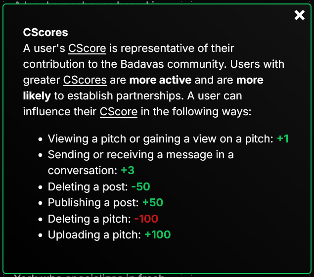

By Nathan Tao
Represents a single user.
export interface User {
type: UserType;
uid: string; // user id
username: string;
description: string;
wants: string;
website: string; // unused, ignore for now
email: string;
youtube: string; // unused, ignore for now
snapchat: string; // unused, ignore for now
instagram: string; // unused, ignore for now
facebook: string; // unused, ignore for now
tiktok: string; // unused, ignore for now
cscore: number; // a metric representative of a user's
// contribution to the Badavas community
verified: VerificationState;
supporter_banner_url: string | null;
avail: boolean; // whether the user is available for partnerships
};
Here is how CScore is described on the V2 computer site:

Not super relavant right now. Either ignore or display on the user's profile whether they are a company or individual. Both company and individual accounts have equal access to content.
export enum UserType {
company,
individual,
};
Ask me (Nathan) for the application criteria for a user to achieve the next “level” of verification.
export enum VerificationState {
unverified,
email_verified,
business_verified,
integrity_verified,
dedication_verified,
full_trust,
};
export interface ERROR {
errorDesc: string;
errorID: string; // a jumbled string identifying the error, just
// display this value to the user if an error occurs
};
if (!res.ok) {
const errorData = await res.json();
alert(
`Oh no! You found an error!
Status: ${res.status}
Error Code: ${errorData.errorID}
Description: ${errorData.errorDesc}
If you believe this error should not have occurred, please report this as an issue. We recommend you screenshot this message and record the error code.`
);
return;
}
export interface Conversation {
otherUser: User;
unreadMessage: boolean;
acceptedConv: boolean; // unused, ignore for now
};
Sent in a conversation.
export interface Message {
sender: User;
reciever: User;
timeSent: string; // date string, convert to date object: new Date(messageObj.timesent)
message: string; // the text of the message, kinda weird naming ik why name two things message... well it was from an older version of the site
};
Not in terms of "POST request", but rather the "posts" feature on our website.
export interface Post {
postid: string; // can be used in endpoints to reference the post
sender: User; // the post's author
timesent: number; // to convert to date object: new Date(postObj.timesent), for some reason this timesent propery is a number while the timesent property for the Message interface is a string...
title: string;
value: string; // the content of the post in sanitized HTML
replyTo: null; // unused, ignore for now
};
POST requests will be subdivided into two types. In my frontend code, I access “type 1” endpoints using forms and “type 2” endpoints using the Fetch API. Type 1 endpoints tend to be used for file uploading, whereas type 2 endpoints serve all other purposes.
Type 1 POST Endpoints can be accessed at https://dev.badavas.com/api/.
Utilized to upload profile pictures. It is recommended that you convert the image into 100x100 px (any method of doing this suffices). The uploaded image must be less than 100 KB in size.
Badavas Super Supporters may upload images of type png, jpg, or gif. Other users may only upload files of type png or jpg.
Minimal setup from client:
<form
action="/api/upload-pfp"
encType="multipart/form-data"
method="post"
>
<input
type="file"
id="pfp-input" // must be pfp-input
name="pfp-input" // must be pfp-input
accept={`image/png, image/jpeg${isSuperSupporter ? ", image/gif" : ""}`}
></input>
<input
type="submit"
></input>
</form>
Utilized to upload pitches. It is recommended that you convert the video into 1080 px width and 1920 px height (any method of doing this suffices). The uploaded video must be less than 50 MB in size and be of type mp4 or mov.
Minimal setup from client:
<form
action="/api/upload-pitch"
encType="multipart/form-data"
method="post"
>
<input
type="file"
id="pitch-input" // must be pitch-input
name="pitch-input" // must be pitch-input
accept="video/mp4,video/mov"
></input>
<input
type="submit"
></input>
</form>
try {
const res = await fetch("https://dev.badavas.com/api2/sign-in", {
method: "POST",
headers: {
"Content-type": "application/json",
},
body: JSON.stringify([
"example_username", // ARGUMENTS GO HERE
"example_password",
]),
});
} catch (err) {
console.log(err);
}
export const post = async (action: string, data: any[]): Promise<any> => {
try {
const res = await fetch(`https://dev.badavas.com/api2/${action}`, {
method: "POST",
headers: {
"Content-type": "application/json",
},
body: JSON.stringify(data),
});
if (!res.ok) {
const errorData = await res.json();
// handle error, see Important Types (for Typescript) > ERROR > Handling ERRORs
return;
}
// these actions return BLOBs
const blobActions = new Set(["get-profile-image", "get-pitch", "get-pitch-thumbnail"]);
return blobActions.has(action) ? res.blob() : res.json();
} catch (err) {
console.log(err);
}
};
Type 2 POST endpoints can be found at https://badavas.com/api2/.
None
User if the user is logged in.
false if the user is not logged in.
ERROR if the server cannot resolve a problem.
None
true if the sign out process succeeds.
ERROR otherwise.
string representing the user id of the user to retrieve.User if the user exists and is successfully retrieved.
ERROR otherwise.
Try to minimize use of this endpoint in favor of endpoints that transfer less data (e.g. /get-user, /get-recommendations).
None
User[] if successful.
ERROR otherwise.
Creates a user by the sign up process (NOTE: Verification email must be sent separately, using /send-verif-email). Follow User Property Rules for property inputs.
This endpoint also automatically signs in the user.
UserBlueprint object representing the user to create.userBlueprint.uid has not been taken. Use /check-uid-validity to ensure this.userBlueprint.email has not been taken. Use /check-email-validity tp ensure this.UserBlueprint definition.)true if successful.
false if no unexpected errors but email invalid.
ERROR otherwise.
interface UserBlueprint {
uid: string; // 1 <= length <= 30
type: UserType; // irrelavant, just set a random value
username: string; // 1 <= length <= 65
email: string; // 1 <= length <= 255
password: string; // 1 <= length <= 256
description: string; // 50 <= length <= 256 or length = 0*
// (*NOTE: There is an option to leave no description.
// this is the only case where the length may
// equal exactly 0 and less than 50.
// A similar idea goes for the wants.)
wants: string; // 50 <= length <= 256 or length = 0*
loginmethod: "regular" | "google";
};
Deprecated. Do not use.
Updates the currently logged in user. You will have to call /get-curr-user to get the updated User object representing the current user.
UserEditableProperty representing the property of the current user to update."supporter_". In other words, only Badavas Super Supporters may update properties associated with Badavas Super Supporters.any representing the new value for the property. Follow User Property Rules for property inputs.avail user property, do not input a boolean. Instead, input 1 for true and 0 for false.User representing the updated user, if updating is successful.
ERROR otherwise.
type UserEditableProperty = "uid" | "type" | "username" | "description" | "wants" | "email" | "supporter_banner_url" | "password" | "avail";
Unclear use case. Use to ensure the current user object is synced with the current user's object in the database. /get-curr-user has to be used after calling this method to obtain the most recent user. Safe to ignore.
None
true if successful user reload.
ERROR otherwise.
Returns whether a user ID is available or taken. Primary use case is when setting a user's ID to ensure that the new value is valid.
string representing the user ID to check.true if user ID is available.
false if user ID is taken or server encountered an error.
Returns whether an email is available or taken.
string representing the email to check.true if the email is available.
false if the email is taken or server encountered an error.
Attempts to sign in and updates the current user if the sign in process is successful.
string representing the user ID of the user attempting to sign in.string representing the password of the user attempting to sign in.true if the user ID and password match, and no error is encountered (i.e. sign in is successful).
false otherwise.
Returns all the conversations associated with the current user
None
Conversation[] representing the conversations associated with the current user, if conversation retrieval is successful.
ERROR otherwise.
We use socket.io for realtime messaging. The following is an example react.js hook that outputs a live-updating variable associated with the current user's conversations.
The server emits an "nm" (new message) event every time the current user sends or recieves a message.
import { useEffect, useState } from "react";
import { io } from "socket.io-client";
// more types have to be imported here as well
export const useConversations = (currUser: User): Conversation[] => {
const [socket, setSocket] = useState<Socket>();
const [conversations, setConversations] = useState<Conversation[]>([]);
useEffect(() => {
// assume getConversations() retrieves the messages from
// the /get-conversations endpoint and handles potential errors
getConversations().then((res: Conversation[]) => {
setConversations(res);
});
// create socket by sharing our current user's user ID
setSocket(io({ query: { thisUID: currUser.uid } }));
}, []);
useEffect(() => {
if (!socket) return;
// listen for new messages
socket.on("nm", async () => {
const convs = await getConversations();
setConversations(convs);
});
return () => {
socket.off("nm");
};
}, [socket, conversations]);
return conversations;
};
Returns the messages the current user has with another user.
string representing the user ID of the “other” user (the user that is messaging / being messaged by the current user).number, “limit”, that represents the number of messages to obtain (most recent messages are obtained first).25 for this parameter and increases this limit by 25 after the user has scrolled through all sent messages. This endpoint has to be called again to obtain the next 25 messages, using 50, then 75, then 100, etc. for this parameter.Message[] representing the first “limit” messages, sorted from most recent to least recent, if message retrieval is successful.
ERROR otherwise.
This does what you think it does (iykyk).
string representing the receiving user's ID.string representing the message.true if message send is successful.
ERROR otherwise.
Gets the number of pitches a user has.
string representing the user ID of the user whose pitch count will be returned.number representing the number of pitches the user has, 0 if error.
Gets the number of views a pitch has.
string representing the user ID of the owner of the pitch.number representing the index of the pitch amongst the user's pitches. Each pitch is identified by its owner and its index.number (integer) representing the requested pitch's views, if retrieval is successful.
ERROR otherwise.
Adds a view to a pitch.
string representing the user ID of the owner of the pitch.number representing the index of the pitch amongst the user's pitches. Each pitch is identified by its owner and its index.true if successful.
ERROR otherwise.
Sends a verification email. The user, if preconditions are met, the email they claim is valid, and the email they claim is theirs, will recieve, by email, a verification code. Verifying to above level 1 is manual, and will be managed by the rest of the Badavas team.
string representing the user ID of the user whose email should be verified.user.verified === 0).true if successful.
false if no unexpected errors occured but the inputted email was invalid.
ERROR otherwise.
Verification can occur on the main computer site. Once the verification email is sent using /send-verif-email, my computer site (which will have mobile-compatible verification pages) can handle the rest of the verification process (which includes this endpoint). You can ignore this endpoint.
string representing the verification code.true if verification is successful.
false if no unexpected error occurred but the verification was prevented for some valid reason (wrong user, code expired).
ERROR otherwise.
Sends an email to reset the password. Given a user ID and an email. Checks for user ID—email correspondence.
string representing the user ID associated with this password reset request.string representing the email associated with this password reset request.1 if email was sent successfully.
2 if no user has both the given user ID and the given email.
3 if an unknown failure occurred.
For a similar reason to /activate-verif-code, you may ignore this endpoint.
string representing the password reset code.string representing the new password.true if successful.
ERROR otherwise.
You can ignore this too.
string representing a password reset code.true if the code is valid and no errors occurred.
false if the code is invalid (does not exist) and no errors occurred.
ERROR otherwise.
Get posts.
string representing the user ID associated with a user whose posts should be retrieved ornull to not filter posts.number representing the number of posts to retrieve. Most recent posts will be retrieved first.Post[], sorted from most to least recent post, if successful.
ERROR otherwise.
Posts a post.
PRECONDITION: The current user has not posted in the last 30 minutes, and the current user's verification level is greater than 0 (currUser.verified !== 0).
string representing the content of the post, in sanitized HTML (will also be sanitized again in backend).string representing the title of the post.true if successful.
ERROR otherwise.
Posts the default “just-joined-Badavas” post. Poster does not have to have verification level greater than 0, but may not have greater than one post before this call, or ERROR 0xpPRT60150739, “User must be at least verification level 1 to post.”, 401, will be returned.
None
true if successful.
ERROR otherwise.
Gets the last time a user posted.
string representing the user ID of the user whose last post time will be retrieved.number representing the requested user's last post time as a number of milliseconds since the UNIX Epoch, if no unhandled error was encountered, and the user has no undeleted posts.
0 if no unhandled error was encountered, and the user has no undeleted posts.
ERROR otherwise.
Deletes a post.
string representing the ID of the post that will be deleted.true if successful.
ERROR otherwise.
Deletes a pitch.
number (integer) representing the index of the pitch to delete (among the pitches of the current, signed-in user).undefined if successful (don't question the inconsistency; if it ain't broke, don't fix it [im scared of breaking things]).
ERROR otherwise.
Gets the number of non-deleted posts (potentially owned by a specific user).
string representing the user ID of the user whose non-deleted post count should be found, or null to find the total number of posts.number, the count of non-deleted posts under the selected constraints, if successful.
ERROR otherwise.
Randomly gets and returns a specified number of verified (verification level > 1) users.
number representing the number of users to return, if possible.User[], the array of random users, if successful.
ERROR otherwise.
Gets the number of messages in a conversation between the current user and another user.
string representing the uid of the “other” user in the conversation (i.e. the user that the current user is sending / recieving messages to / from).number (integer) representing the message count, if successful.
0 otherwise.
Gets the thumbnail of a pitch.
string representing the user ID of the owner of the pitch.number representing the index of the pitch amongst the user's pitches. Each pitch is identified by its owner and its index.A blob with a 1-frame video (do not question why this returns a video instead of an image) representing the thumbnail of the pitch, if successful.
ERROR otherwise.
Gets a pitch.
string representing the user ID of the owner of the pitch.number representing the index of the pitch amongst the user's pitches. Each pitch is identified by its owner and its index.A blob with the pitch video.
ERROR otherwise.
Gets the Badavas AI similarity score between two users.
SimilarityData if successful.
ERROR otherwise.
interface SimilarityData {
score: number; // 0-100 with 1 digit after the decimal point
justification: string;
};
Recommends and outputs 3 users that would partner well with the current user out of a psuedorandomly generated subset (max size 100) of the whole user set.
Basically recommends partnerships, with potential for different recommendations if this endpoint is called again.
None
[RecommendationData, RecommendationData, RecommendationData] representing the 3 users that were recommended, if successful.
ERROR otherwise.
type RecommendationData = [User, number][]; // number = similiarity score between current user and the User in this tuple
Locates and outputs 3 users that correspond to a search query.
string representing the search query.number. Deprecated, set to 3.[User, User, User] representing the 3 users that were recommended, if successful.
ERROR otherwise.
Returns whitelisted users. Your site should have a “whitelist” mode where only whitelisted users can enter the site (all users can sign up, but only whitelisted users can access the full site, whereas non-whitelisted users can only sign up, sign in, view the home page, reset their password [which will be partially handled by the computer site], and verify [which will also be partially handled by the computer site]).
None
string[] containing the UIDs of the whitelisted users, if successful.
ERROR otherwise.
Returns whether a given user is a Badavas Super Supporter.
string representing the user ID of the user to query.true if the requested user is a Badavas Super Supporter, and no unhandled exceptions occurred.
false if the requested user is not a Badavas Super Supporter, and no unhandled exceptions occurred.
ERROR otherwise.
Assuming you program using React, any endpoint you send a GET request to will direct to your index.html file. History manipulation and varying behavior based on path should be handled on the frontend, and your React code should be able to respond to starting in different URLs.
Notice some properties max at powers of 2, others max at one less than a power of two, and some max at one more than a power of two (what???). Do not question these choices :>
Also note: new lines must be counted as characters.
| Property Name | Conditions |
|---|---|
| supporter_banner_url | 0-256 chars long, represents png, jpeg, jpg, or gif |
| username | 1-65 chars long, does not contain {, }, Business A, Business B, Businesses A and B, Businesses B and A |
| uid | 1-30 chars long, only contains lowercase alphanumeric chars, _, or - (no en/em dashes). Unique |
| 1-255 chars long, whole string resembles an email format (you can find regex online for matching potentially valid emails) | |
| password | 1-65 chars long, does not contain backslashes |
| description | 100-256 chars long |
| wants | 100-256 chars long |
| type | 0 or 1, 0 == company account, 1 == individual account |
yayayay finally this is the end
lmk if there are any issues with this documentation by sending an email to natnu212@gmail.com
if a precondition to some endpoint seems like it should exist but does not exist (or was not written), let me know!
:>